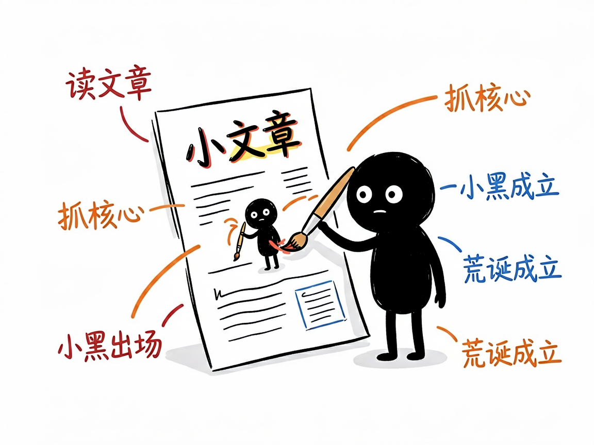
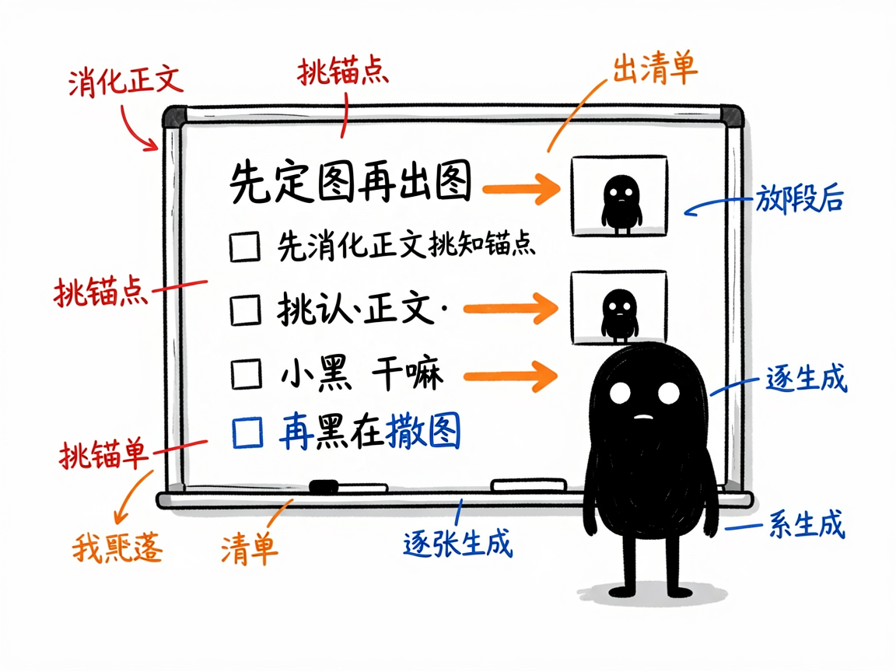

文章写好了却愁配图？让"小黑"把你的观点画成清爽怪诞的手绘图 —— ian-xiaohei-illustrations 介绍
写文章最尴尬的环节之一，就是配图：网上扒的图版权说不清，PPT 风的信息图又太死板，找设计师排期又等不起。你真正想要的，是几张"读得懂、不土、和文字严丝合缝"的插图，最好还能批量来。
ian-xiaohei-illustrations 就是来解决这件事的。
你给它一篇中文文章，它还你一组 16:9 横版的手绘正文配图——纯白底、黑色线稿、少量红橙蓝中文批注，主角是一个叫"小黑"的怪诞小人和你文章里的核心观点一起"做一件荒诞但成立的事"。它专做"正文配图"，不是商业插画、也不是可爱卡通。

它到底能做什么
- 先"消化正文"：读你的文章，挑出最适合用图表达的"认知锚点"——核心判断、前后对比、流程闭环、常见坑、状态变化等，而不是平均撒图。
- 先出配图策略（shot list）：每张图标明放哪段后、讲什么、小黑在干嘛、建议元素和中文标注词，默认 4-8 张，短文 1-3 张。
- 把文章里的判断/流程/结构/隐喻，变成一张清爽、怪诞、可读但不像说明书的手绘解释图。
- 默认视觉 IP 是"小黑"：黑实心、白点眼、细腿、空表情，必须参与画面核心动作，不能只站旁边当装饰。
- 生成后做 QA 检查：太满、太像 PPT、小黑变装饰、背景不干净等问题会重画或修。
- 支持三种交付模式：URL 模式（直接嵌链接，最省事）、下载模式（存本地，适合公众号发稿）、Base64 模式（网络不稳时兜底）。
一个具体例子
它会通过生图接口出图，标准调用形如：
curl -sk --request POST \
--url https://apihub.agnes-ai.com/v1/images/generations \
--header 'Authorization: Bearer <你的API Key>' \
--header 'Content-Type: application/json' \
--data '{
"model": "agnes-image-2.0-flash",
"prompt": "16:9 横版中文正文配图，纯白背景，黑色手绘线稿，少量红橙蓝中文手写批注，大量留白，小黑作为核心动作主体……",
"size": "1024x768",
"extra_body": { "response_format": "url" }
}'
提示词里必须带上：16:9 横版、纯白底、黑色手绘、少量红橙蓝批注、小黑当主角，并明确禁止 PPT 风/商业插画/幼稚可爱。它强调"先小样验证全链路、再批量生成"，避免网络不稳时白忙活。

谁适合用
- 公众号/博客作者，给文章配统一风格的插图（它常被写作类 skill 调用）。
- 做方法论、流程、结构类内容的人，需要把抽象概念画清楚。
- 知识博主、Notion 文档整理者，想让长文不再只有字。
一点说明 / 小提示
它的定位是"正文配图"，不是封面大图、也不是品牌吉祥物设计。每张图只讲一个核心结构，且要求每次从当前文章重新发明隐喻，不照抄过往案例。它是给"会调 AI Agent 的人"用的 skill（放在 skills 目录由 AI 加载），不是图形界面软件；生图依赖外部接口和 Key，连通性和图片托管稳定性会影响最终效果，具体以项目 SKILL.md 为准。